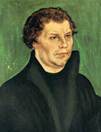

Aydınlanmanın Kan Pahası: Protestan İsyan
29 Mayıs 1453’te, Osmanlı orduları Konstantinopolis’e girerken Haliç’ten sessizce demir alan Venedik ve Ceneviz gemileri, başkentten kaçan sığınmacılarla doluydu. Her sığınmacı, kentin “düşüş”üne ilişkin yeni bir ayrıntıyı ve dövüşerek ölen imparatorun trajik sonunu anlatıyordu.
Katolik Batı Roma, yani Avrupalılar, sanki Ortodoks Doğu Roma’yı her anlamda zayıflatan, kadim başkentini Hilal orduları önünde yalnız bırakan onlar değilmiş gibi sarsıldı, Konstantinopolis’in kaybıyla...
İsevilerin Kudüs’ten sonraki en kutsal mekânı da, Osmanlı fethiyle, Haç’tan Hilal’e geçiyordu. Hıristiyanlığın ilk başkenti, zaten birkaç yüzyıl sonra da İslamiyet’in payitahtı olacak, Roma burçlarında Hilafet bayrağı dalgalanacaktı.
Sekiz yüz yıllık bir sahtekârlığın üstünde oturan Papa, Hıristiyan âlemine önderlikte rakipsizdi artık. Ama Avrupa da kaynıyor, uygarlık ve bilim gelişiyor, Roma Kilisesi’nin sultasındaki ruhban sınıfı kadar, Papa’ya körü körüne bağlı müminlerin yaşamın gerçekleriyle çelişen din dogmalarına, doğru bilgiye ulaşmayı engelleyen yasaklara bakışı da değişiyordu.
Hıristiyan ve Yahudi kültürü, takvime bağlı yazılı belgeye İslamiyet’ten daha çok önem verip sakladığı içindir ki “tarih bilimi”ni de onlar icat etmiştir. A’dan Z’ye tüm kurallarını koydukları tarih biliminde de geçmiş zamanları dönemlere ayıran çağların ne zaman bitip ne zaman başladığına da elbette onlar karar vermektedir.
İslami kültürden gelen biz Türkler, işte Hıristiyanların yazdığı bu dünya tarihinde, İstanbul’un fethiyle Ortaçağ’ı kapatıp Yeniçağ’ı açmış olmakla övünürüz. Haklıyızdır da.
Ama örneğin, son zaman tarihçilerinin Ortaçağ’ı kapatan ögenin başlı başına (onların jargonuyla) Konstantinopolis’in düşüşünün ya da (bizim jargonumuzla) İstanbul’un fethinin olmadığını ileri sürdüğünden de haberimiz yoktur!
Modern tarihçiler, çok övündüğümüz “Fetih” olgusunu artık Ortaçağ’ı bitiren yegâne etken ve 1453’ü kesin tarih kabul etmiyorlar. Özellikle Hıristiyan âlemini çok uzun süren bir bağnazlığa gömen Ortaçağ karanlığının yavaş yavaş kalktığı Aydınlanma sürecini 1450’den 1517’ye kadar yayarak, şok tarihler olarak birden fazla dönüm noktası öneriyorlar.
Bunlardan birincisi, Gutenberg’in mobil metal harflerle geliştirdiği ve baskı tekniğinde devrim yapan matbaasında 1452 ile 1454 yılları arasında bastığı tarihin ilk “matbu” kitabı, 42 satırlık İncil... Matbaanın icadı, her türlü kitabın ve tabii bilginin yaygınlaşması, insanların okuyarak gözünün açılması demekti. İncil’in basılmasından öteye ise Papaların keyfî kararlarını ve Papalık Devleti demek olan Roma Katolik Kilisesi’nin zırva sardığı dolmaları, tartışılmaz din dogmaları diye yutturmak zorlaştı.
İkinci tarih önerisi, elbette 1453’te İstanbul’un fethi.
Üçüncüsü, 1492 yılında olanlar: İspanya’nın Katolikler tarafından yeniden fethinin (Reconquista) tamamlanması. Amerika kıtasının keşfi. Ki bunlardan birincisine ilişkin ayrıntıya dikkatinizi çekmek isterim: İspanya’daki son İslam devleti Granada Emirliğini ortadan kaldıran ve Hıristiyanlığı kabul etmeyen Müslümanlar ile Yahudileri İber Yarımadası’ndan silip atan İspanya Kraliçesi Birinci Isabella, Reconquista’yı, Konstantinopolis’in rövanşı olarak sunar...
Modern tarihçilere göre Ortaçağ’ı kapatan dördüncü ve sonuncu dönüm noktası ise 1517’de Almanya’da Martin Luther tarafından başlatılıp Fransa’da Jean Calvin tarafından sürdürülen Protestan reformunun başlangıcıdır.
Protestan reformu, her şeyden önce Papa’nın yeryüzündeki tanrısal iktidarına (potestas) dayanarak devletlerin ve müminlerin üstünde kurduğu baskı ile Roma Katolik Kilisesi’ne bağlı ruhban sınıfının haksız zenginleşmesine karşı çıkan ahlaklı din adamlarının isyanıdır. Bu din adamları, Kilise’nin yapılanmasında ve Hıristiyanlık dogmalarında reform talep etmektedir. Zaten reform hareketinin doğuracağı yeni mezhep, Roma Katolik Kilisesi ve Papa’nın Hıristiyanlığın özüne aykırı kurumsal yozlaşmasını “protesto” ettiği için Protestan Kilisesi adını alacaktır.
Din yapılanmasında reformu savunan Protestan mezhebi, Hıristiyanlık âleminin Ortodoks ve Katolik olarak ayrışmasından sonraki en büyük kırılmadır. 1517’den öteye başta Almanya, Fransa, Hollanda ve İngiltere, İsevi müminlerin Katolik ve Protestan ayrımıyla bölündüğü Avrupa kıtasında yüz yıldan fazla sürecek “Din Savaşları” başlamış, halklar arasındaki katliamları, devletlerarası kanlı çatışmalar izlemiştir.
Katolikler ile Protestanlar arasındaki sonuncu ve kalıcı barış, 1648’de yapılan Münster Antlaşması’yla sağlandı. Ama bu kanlı sürecin sonunda, Avrupa’da din birliği de kalmadı. Protestan hareket, Anglikan, Kalvinist, Luteryen gibi pek çok reformcu kilisenin kurulmasına ve özerkleşmesine yol açtı.
Hıristiyanlık öğretisi, temsiliyeti, hatta dogmalarını yeniden yorumlayan bu kiliseler; Papa’nın evrensel önderliğini, yeryüzü iktidarını, devletlerüstü yetkilerini ve Roma Katolik Kilisesi’nin tüm kiliseler üstündeki otoritesini reddettiler.
Almanya’nın güneyi Katolik ve Papa’ya sadık kalırken kuzeyi Protestanlığı benimsedi.
Keza Hollanda ile İsviçre halkları hemen yarı yarıya, Katolik ve Protestan diye bölündü.

Martin Luther/Ressam: Lucas Cranach, 1526
Jean Calvin/Ressam: George Stuart
İngiltere Krallığı’nda, Papa’yla bağları kopartan Anglikan Kilisesi kuruldu.
İskandinav ülkeleri geniş genelinde Protestanlığı seçerken; örneğin Polonya, İspanya, Avusturya ve İtalya baştan sona Roma Katolik Kilisesi’nin yanındaydı.
Protestanların azınlık ve iktidardaki kralların Papa’ya sadık kaldığı Katolik Fransa ise öteden beri “Kilise’nin Büyük Kızı” sayılıyordu. 1789 Fransız Devrimi sırasında dine karşı güdülen kin, kiliselerin yakılıp yıkılması ve papazların giyotine gönderilmesi, halkın mümin yarısının daha da bilenmesinden başka işe yaramadı. Bugünkü cumhuriyetçi, üstüne laik Fransa’nın çoğunluk nüfusunu oluşturan Katolikler, hâlâ Roma Katolik Kilisesi’nin öncelikli kız evladı olmakla övünürler...
Günümüzde, Papa’yı Hıristiyan âleminin ruhani lideri değil, sadece Katolik Kilise’nin Başpatriği kabul eden ve Vatikan’daki törenlere de “Katolik Kilisesi’yle iyi ilişkiler” temelinde katılan Ortodoks, Protestan, Anglikan vb. mezhep ruhbanı; ortak din kurultaylarında aynı bağımsızlığı sergilerler. Ama bu bağımsızlık, ortak kararlar alınmasını, İsevi çatıyı savunmak için ittifaklar yapılmasını elbette engellemez.
Ne var ki değişik mezheplere ait ruhban sınıfının bilinçaltında ve müminlerin ise bilinçüstünde bile kapanmayan bir bellek yarası vardır. Ortodokslar ve Protestanlar, Katoliklerden gördükleri zulmü unutamazlar. Ama Katolikler, bu zulüm tarihinden sanki Katolik Kilisesi sorumlu değilmiş gibi, asıl Hıristiyanların kendileri olup ihanete uğradıklarını düşünürler.
Ve 1517’den 1648’e kadar Avrupa’yı kana bulayıp, sözde aynı Tanrı’ya tapan, aynı oğula inanan ve aynı kitabı kutsayan “İsa’nın kuzuları”nı birbirine boğazlatan bu kanlı bölünme sürecinde; Protestanların, Papa’nın otoritesini gayrimeşru ilan etmek için kullandıkları en önemli gerekçe neydi sizce?
Elbette ki Papalık makamı ve devletinin bir sahtekârlık üstüne kurulduğu gerekçesine dayandılar, Konstantin’in sahte vasiyetini kullandılar!
Lorenzo Valla’nın 1506’dan beri matbaada basılıp dağıtılan “Konstantin’in Sahte ve Yalan Bağışına Dair Bildiri”si, Protestan reform öğretisini biçimleyen din bilginlerinin, adeta İncil’den sonra üzerinde en çok düşünüp yazdıkları bir rehber haline gelmişti!
Ne gariptir ki, bir zamanlar Roma’daki Papalık makamından İtalya’nın tamamına yayılan Papalık Devleti yaratmaya ve Papaları hükümdarların hükümdarı, tüm Hıristiyan âleminin en üst otoritesi kılmaya yarayan sahtekârlık... 900 yıl sonra Hıristiyanlığı ikinci kez bölüyor ve Papa’nın evrensel önderliğine de son veriyordu.
İlahî adalet bu muydu, hak yerini bulmuş muydu gerçekten?
Ne gezer...